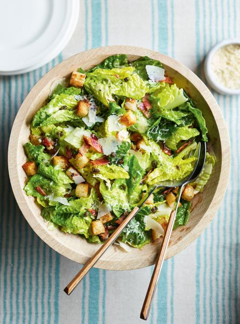

- Placer la grille au centre du four et préparer des croûtons croustillants au beurre.
- Monter une mayonnaise aux jaunes d’œufs, citron, anchois et ail, puis ajouter les huiles en filet.
- Assembler laitue romaine, parmesan, bacon et croûtons, puis mélanger avec la vinaigrette.

Source d’inspiration: Ricardo Cuisine
- Frites croustillantes, fromage en grains frais et sauce brune chaude versée au dernier moment.
- Assaisonner et servir immédiatement pour conserver le croquant des frites.

Photo et inspiration: Saveur